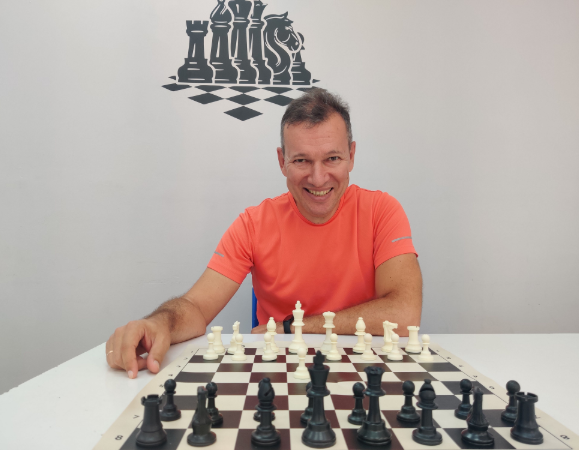
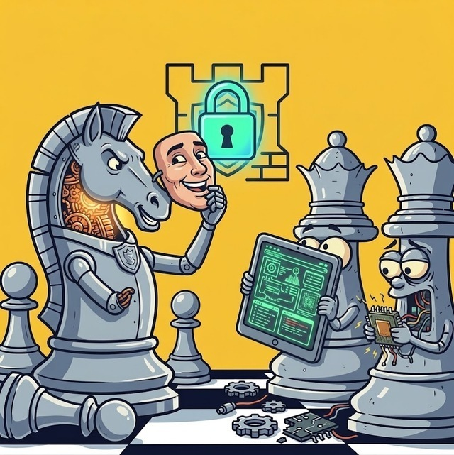
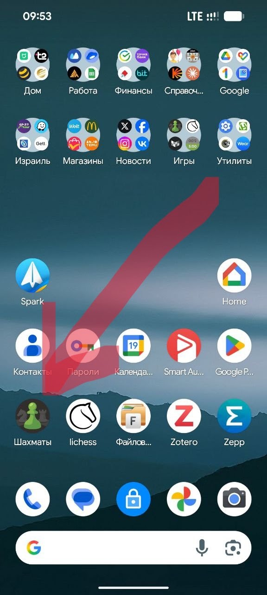
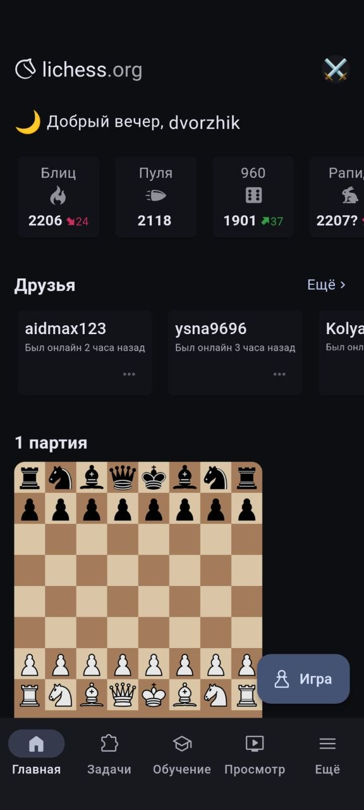
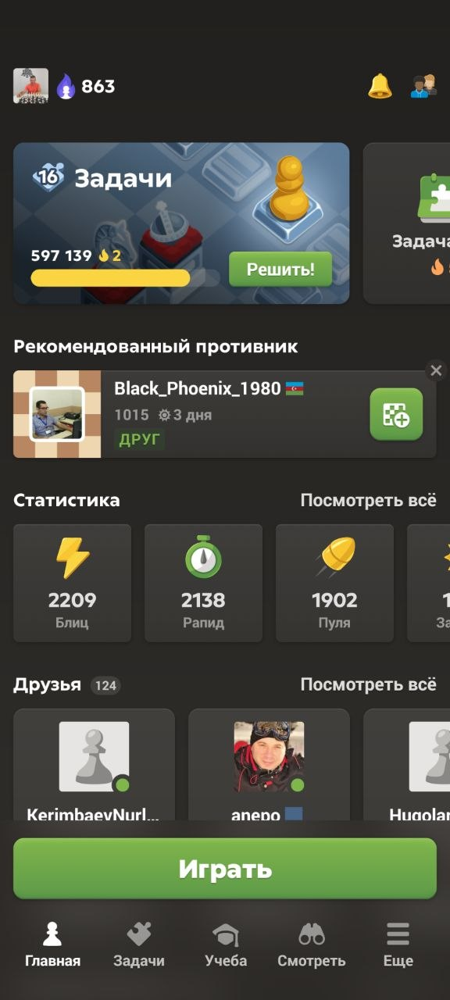
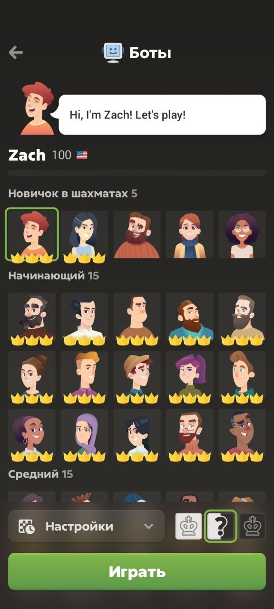
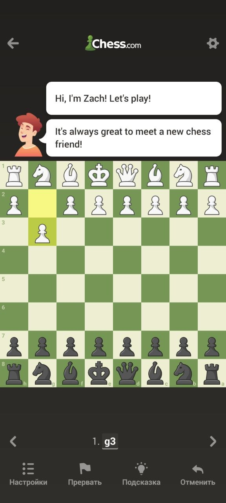
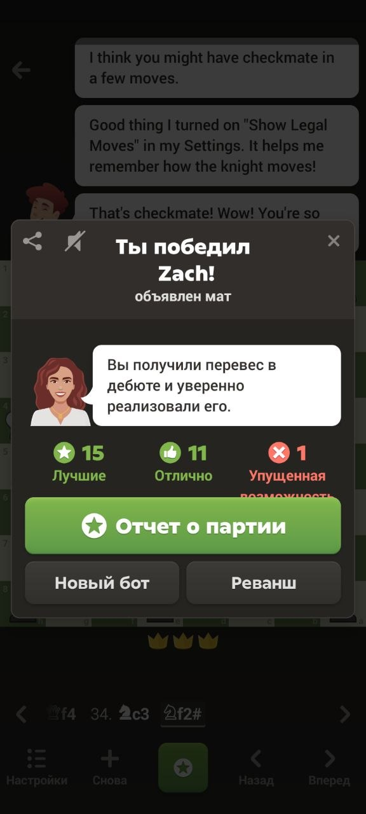
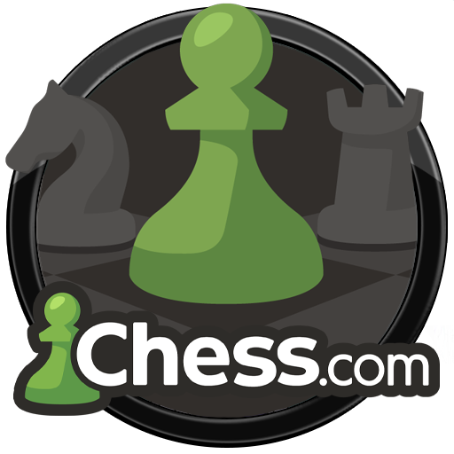
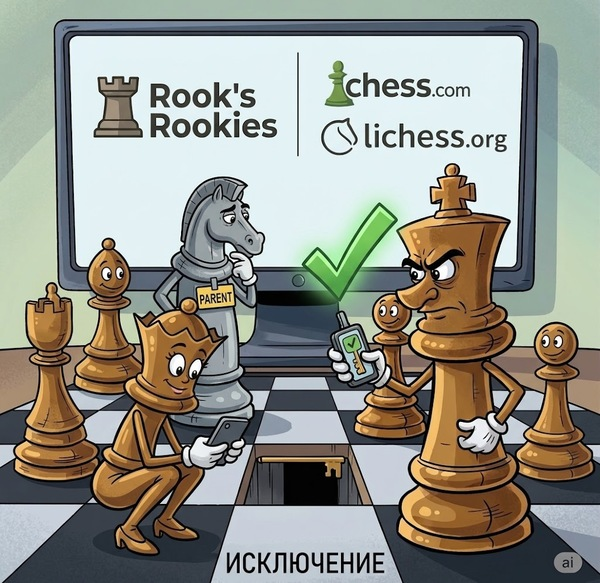

Шаг 1
Учимся играть
Короткие уроки для тех, кто только знакомится с доской. Есть отдельные видео для самых маленьких.
Шахматный тренер · Нагария, Израиль
Учу играть в шахматы детей от 5 лет и взрослых: группы, частные уроки, очно в Нагарии и онлайн по всему миру.

Три шага от правил до первой выигранной партии.
Короткие уроки для тех, кто только знакомится с доской. Есть отдельные видео для самых маленьких.

Пошагово: как запустить приложение, настроить первого бота и выиграть дебютную партию на телефоне или компьютере.

Цель игры — мат. Ставим мат одинокому королю ферзём, ладьёй, двумя ладьями и слоном с конём.
Хотите научиться играть или усилить свою игру? Приглашаю в Нагарию: есть группы для новичков и опытных игроков, а для ценителей индивидуального подхода — частные уроки очно и дистанционно.
Материалы, которые помогают учиться и держат в курсе шахматной жизни.
Меня зовут Александр Дворжицкий. Играю в шахматы с 6 лет.
Занимался шахматами в Перми (тренер Марк Друккер), затем в Петрозаводске (тренер Александр Гойхенберг).
После переезда в Израиль в 2021 году начал выступать за команду города Нагария и работать тренером по шахматам.
Занимаюсь с шахматистами любого возраста — от 5 лет до бесконечности.
Мой ник на игровых платформах — dvorzhik. Вызывайте на партию, а если есть вопросы или пожелания к занятиям — напишите в удобном мессенджере.
Посмотрите внимательно все 6 коротких видео.
Посмотрите внимательно все 14 коротких видео.
Если у вас маленький ребенок и он заскучал, покажите ему вот эти видео!
Это уроки для самых маленьких шахматистов — шахматят!
Пройдите все уроки по порядку (смотрите на подсказки на доске).
Пошаговая инструкция для телефона — на компьютере шаги такие же. Нажмите на скриншот, чтобы рассмотреть его крупнее.
Lichess.org — полностью бесплатная платформа без рекламы. Играть с компьютером можно прямо в браузере телефона или компьютера.
Для сохранения прогресса и рейтинга создайте аккаунт. Первые партии можно сыграть и без регистрации.



Пошаговая инструкция для приложения Chess.com. Нажмите на скриншот, чтобы рассмотреть его крупнее.
Установите приложение Chess.com на смартфон или откройте сайт:







Внимательно смотрим обучающее видео с линейным матом.
Затем ставим мат самостоятельно на доске (переходим по ссылке и нажимаем на значок со шпагами):

Внимательно смотрим видео с оттеснением короля в угол и прижатием к краю.
Ставим мат самостоятельно (переходим по ссылке и нажимаем на значок со шпагами):

Внимательно смотрим видео и учимся отрезать короля по рядам и вертикалям.
Ставим мат самостоятельно (переходим по ссылке и нажимаем на значок со шпагами):

Внимательно смотрим видео и строим диагональный барьер двумя слонами.
Ставим мат самостоятельно (переходим по ссылке и нажимаем на значок со шпагами):

Самый сложный из базовых матов: метод W-образного маршрута коня в угол цвета слона.
Ставим мат самостоятельно (переходим по ссылке и нажимаем на значок со шпагами):
История шахмат насчитывает около 1500 лет: от настольной игры индийской знати до миллионов онлайн-партий каждый день. Правила, фигуры и даже сама роль игры в обществе менялись десятки раз.
Без этих событий шахмат в привычном нам виде просто не было бы. Ниже — главные вехи развития игры от истоков до современности: коротко, по эпохам.
Рождение игры на севере Индии
История шахмат насчитывает около 1500 лет. Игра впервые появилась на севере Индии, оттуда шахматы распространились в Персию, а затем приобрели широкую популярность во всей Азии.
Шахматы приходят в Европу
В Европу шахматы проникли через расширившуюся территорию Арабского халифата — вместе с торговыми путями и переводами восточных книг.
Фигуры и правила становятся современными
До конца XV века шахматные фигуры и правила неоднократно менялись: игра переживала санкции христианской церкви, а время от времени и полные запреты. К концу XV века шахматы приобрели форму, близкую к той, в какую мы играем сегодня.
Эпоха «шахматного романтизма»
Этот период известен как «шахматный романтизм»: шахматисты в основном полагались на тактику, жертвы фигур и чрезвычайно динамичную игру. В 1886 году состоялся первый официальный чемпионат мира — его выиграл Вильгельм Стейниц.
Компьютерная революция и Deep Blue
XX век стал настоящей эпохой революции в шахматах: появились базы данных и шахматные движки. В 1997 году чемпион мира Гарри Каспаров проиграл матч компьютеру IBM Deep Blue — машина впервые победила действующего чемпиона мира в классическом матче.
Онлайн-эпоха
Появляются шахматные сайты, где можно играть онлайн-партии, и игра становится всё популярнее. Два крупнейших портала — Chess.com (запущен в 2007 году) и lichess.org (2010).
Шахматы — это не только спорт, но и огромный мир историй: о гениях и аутсайдерах, о победах и поражениях, о том, как одна партия может изменить жизнь.
Мы собрали 10 лучших фильмов и сериалов о шахматах по рейтингу Кинопоиска, а также 10 мультфильмов, с которых удобно начать знакомство ребёнка с игрой. Рейтинги указаны на октябрь 2026 года.
Подборка отсортирована по рейтингу Кинопоиска. Нажмите на обложку, чтобы открыть трейлер.
 1
▶
1
▶
История сироты Бет Хармон, которая открывает в себе шахматный талант и становится звездой, бросая вызов мужскому миру больших шахмат.
 2
▶
2
▶
Рыцарь возвращается из крестового похода в охваченную чумой Европу и играет в шахматы со Смертью, отстаивая право на жизнь.
 3
▶
3
▶
Драма о легендарном матче Анатолия Карпова и Виктора Корчного в Багио, где на кону стояла шахматная корона.
 4
▶
4
▶
Юный Фахим из Бангладеш оказывается в Париже без документов, но с мечтой стать гроссмейстером. На его пути встречается бывший чемпион.
 5
▶
5
▶
Семилетний Джош Вайцкин поражает всех шахматным талантом. Ему предстоит научиться побеждать, не потеряв детства и любви к игре.
 6
▶
6
▶
Реальная история Фионы Мутези из угандийских трущоб: шахматы помогают ей поверить в себя и изменить жизнь своей семьи.
 7
▶
7
▶
Поэтическая драма об угасающем аристократическом доме, где шахматная партия становится метафорой борьбы за власть. Долгое время фильм был запрещён.
 8
▶
8
▶
Документальный портрет Бобби Фишера — гения, скандалиста и чемпиона мира, а также его матча с Борисом Спасским в 1972 году.
 9
▶
9
▶
Уборщица из отеля случайно открывает для себя шахматы. Новая страсть постепенно меняет её размеренную жизнь и отношения с близкими.
 10
▶
10
▶
Тоби Магуайр в роли Бобби Фишера: история пути гения к матчу века против Бориса Спасского и его собственных демонов.
Весёлые и познавательные серии, которые помогут ребёнку полюбить игру. Все мультфильмы можно посмотреть на YouTube.
 1
YOUTUBE
▶
1
YOUTUBE
▶
Фиксики объясняют, как устроена шахматная доска, как ходят фигуры и почему в шахматах важно думать наперёд.
 2
YOUTUBE
▶
2
YOUTUBE
▶
Короткий выпуск «Фикси-советов»: простые правила и первые шаги для тех, кто только садится за доску.
 3
YOUTUBE
▶
3
YOUTUBE
▶
Смешарики открывают для себя шахматы и на собственном опыте узнают, что главное — не спешить и думать на несколько ходов вперёд.
 4
YOUTUBE
▶
4
YOUTUBE
▶
В семье Барбоскиных решают выяснить, кто настоящий гроссмейстер. Весёлая серия о шахматном соперничестве и азарте.
 5
YOUTUBE
▶
5
YOUTUBE
▶
Коржик, Карамелька и Компот учатся играть в шахматы и понимают, что это не просто игра, а настоящая тренировка ума.
 6
YOUTUBE
▶
6
YOUTUBE
▶
Медведь собирается спокойно сыграть партию, но Маша, как всегда, вносит свои правила. Шахматы превращаются в весёлое приключение.
 7
YOUTUBE
▶
7
YOUTUBE
▶
Тётушка Сова знакомит малышей с шахматными фигурами и объясняет правила игры в форме доброй сказки.
 8
YOUTUBE
▶
8
YOUTUBE
▶
Сказка о ёжике, который учится играть в шахматы и понимает: чтобы победить, нужно думать наперёд и не бояться ошибок.
 9
YOUTUBE
▶
9
YOUTUBE
▶
Почему самая сильная фигура на доске называется королевой? Короткий познавательный выпуск для юных шахматистов.
 10
YOUTUBE
▶
10
YOUTUBE
▶
Короткометражный мультфильм Союзмультфильма о шахматной партии, где фигуры оживают и становятся героями собственной истории.
Видео — самый быстрый способ подружиться с шахматами: десять минут урока, и вечером вы уже понимаете, почему проиграли партию.
В подборке — 11 русскоязычных каналов о шахматах, которые регулярно выпускают новые видео: от гроссмейстерских разборов до уроков «с нуля» для детей и взрослых. Данные о подписчиках и видео — ноябрь 2026 года.
Каналы отсортированы по числу подписчиков, а справа от каждого — его самое популярное видео: удобно сразу понять, о чём канал и стоит ли подписываться.
Отсортировано по числу подписчиков. Нажмите на кнопку, чтобы перейти на канал, или на превью, чтобы посмотреть самое популярное видео.

Блиц-партии и стримы с комментариями мастера FIDE Максима Омариева: живая игра, эмоции и разбор ошибок прямо в эфире.

Анализ партий чемпионов мира, разборы современных гроссмейстеров и обзоры супертурниров — для тех, кто уже знает правила.

Учебные видео и разборы для начинающих: правила, тактика, дебюты и типичные ошибки — спокойно и по делу.

Гроссмейстер Сергей Шипов — самый известный русскоязычный комментатор шахмат: обзоры турниров, интервью и классические партии.

Илья Левитов: обзоры, аналитика и истории из мира шахмат — для тех, кому интересна не только игра, но и её контекст.

Обучение через идеи и здравый смысл, без зубрёжки: почему этот ход сильный, а этот — ошибочный.

Канал Яна Непомнящего: «Неподкаст» с гроссмейстерами, интервью и разборы — шахматы изнутри, без формальностей.
Самое популярное видео
 ▶
▶
НЕПОДКАСТ | Владимир Крамник: матч в Мадриде, читерство, жизнь после шахмат

Тренер и мастер: разборы дебютов, тренажёр дебютов и практические правила, которые сразу улучшают игру.

Разбирает шахматную составляющую в кино и анализирует яркие партии — любопытный взгляд для тех, кто любит и кино, и шахматы.

Мастер и тренер FIDE объясняет шахматные идеи простыми словами — тактика, жертвы и типичные планы.
Самое популярное видео
 ▶
▶
Даже компьютер не видит здесь победный ход белых! Самая красивая жертва ферзя

Молодой международный мастер: короткие разборы дебютов и собственных партий — полезно ровесникам, которые только начинают.
Отметьте один или несколько каналов — можно выбрать сразу несколько любимых. Опрос анонимный: без имени, почты и регистрации, мы видим только общее число голосов.
Результаты опроса
Голосовать можно было за несколько каналов, поэтому сумма процентов больше 100%. Проценты считаются от общего числа голосов за все каналы. Один голос с устройства — без регистрации и без личных данных.
Короткие новости из мира шахмат: рекорды, рейтинги, изменения правил и события, о которых стоит знать.
Раздел обновляется каждую неделю. Свежие заметки всегда сверху, у каждой есть дата публикации и ссылка на источник.

Знакомьтесь, Triumviratus — шахматный движок итальянского программиста Франческо Торселло. С помощью Claude он «навайбкодил» программу, чей рейтинг уже равен Stockfish, а по некоторым оценкам — незначительно его превышает.
Пока протестировать новинку сложно: на ведущих шахматных площадках последней версии движка нет, а где-то нет и самого движка. Но одно можно сказать точно — гегемония Stockfish в компьютерных шахматах может сильно пошатнуться 👀

Наткнулся на забавную игрушку — chesscheaters.com. Вводите свой ник и получаете отчёт: сколько ваших соперников на Chess.com и Lichess получили бан за читерство, сколько это в процентах и сколько партий с ними сыграно.
Отдельной строкой идут аккаунты, которые просто закрылись. Правда, часть таких закрытий наверняка тоже связана с читерством — но сайт эти случаи скромно не учитывает, чтобы не портить статистику.
Работает бесплатно прямо в браузере: данные берутся из открытых API, ник никуда не отправляется. Хорошо отрезвляет после обидного поражения.

Хикару Накамура пробил историческую отметку 3500 в блиц-рейтинге на Chess.com. Пятиминутный контроль — его родная стихия: американец годами держит первое место в блиц-рейтинге платформы, а теперь его цифра начинается с «35». На скриншоте — профиль Хикару в этот момент: 3500 в блице, 3346 в пуле, 2838 в рапиде и 2239 в дейли.

FIDE одобрили эту идею, в связи с «постоянным ростом популярности этого варианта игры и необходимостью в официальной системе рейтингов для соревнований». Одним словом, намечается движ!
Напомним: в шахматах Фишера (Chess960) фигуры в начале партии расставляются случайно, поэтому дебютная теория почти не работает — всё решают идеи за доской.


Современные дети растут в цифровой среде и часто осваивают телефоны и планшеты быстрее взрослых. При этом им всё еще сложно удерживать баланс: игры, короткие видео и яркие соцсети мгновенно затягивают и вытесняют другие занятия. Однако объявлять войну технологиям бессмысленно — гораздо эффективнее направить этот естественный интерес к экранам в продуктивное русло.
Сегодня компьютер, планшет или смартфон — не враги обучения, а обязательные инструменты для серьезного роста юного шахматиста. Современные онлайн-платформы превращают обычное бесцельное «залипание» в увлекательную тренировку логики, стратегического мышления и тактической зоркости прямо из дома.
Для наших занятий и домашних тренировок нам понадобятся две ключевые платформы:
Это главная и самая удобная платформа для шахматистов всего мира. Она полностью бесплатна, не содержит рекламы и дает огромные возможности для решения задач, анализа партий и игр с соперниками со всего света.
Пожалуйста, помогите ребенку пройти простую регистрацию на сайте и обязательно пришлите мне созданный логин (никнейм), чтобы я мог подключить его к обучающим материалам и турнирам.

Вторая по популярности международная программа, которую мы также регулярно используем на уроках. Ее базовый функционал совершенно бесплатен — на начальном этапе обучения платные подписки не нужны. Достаточно просто помочь ребенку зарегистрироваться и настроить профиль.

Если вы используете программы родительского контроля для ограничения экранного времени, пожалуйста, сделайте исключение для этих двух шахматных сервисов.
Время, проведенное на Lichess и Chess.com — это не пустые сетевые развлечения, а полноценная интеллектуальная работа и развитие мышления.
«Шахматы — это жизнь в миниатюре.»